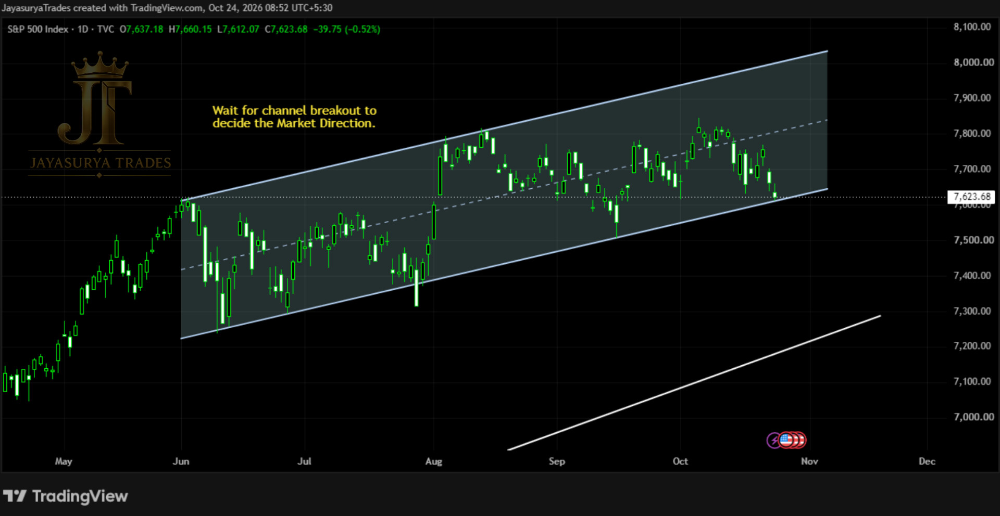

For this Saturday Market Focus, I am reviewing the S&P 500 index. In our previous Saturday analysis, we noted that we needed to wait for a daily candle close outside the ascending parallel channel before deciding the next potential market movement. So far, price remains inside the channel, and the breakout or breakdown is still unconfirmed.
The market is now near the lower boundary of the ascending channel. The next move depends on whether price forms a rejection candle and moves upward, or breaks below the channel and heads toward the ascending trendline marked underneath.
Current Structure: Price remains inside an ascending parallel channel and is testing its lower boundary.
Downside Scenario: If price breaks below the channel, it could move toward the ascending trendline marked underneath.
Rejection Scenario: If a rejection candle forms at the channel base, price could move upward toward the dotted midpoint first, then potentially toward the top of the channel.
Bullish Confirmation: A daily candle close above the channel is required before considering a breakout scenario confirmed.
Approach: Wait for a daily candle close outside the channel before deciding the next market direction.

Market Update — Still Inside the Ascending Channel
Since the previous Saturday Market Focus, the S&P 500 has not produced a confirmed break outside the ascending parallel channel. Price remains inside the pattern, so the next direction is still undecided from this structure.
The current area is important because price is near the lower boundary of the channel. A daily candle close outside the channel remains the condition being watched to assess the next potential movement.
Key Structure to Monitor
The main reference points are the upper and lower boundaries of the ascending parallel channel, the dotted midpoint inside the channel, and the ascending trendline marked below it. No numerical price levels were provided for these structures.
Potential Scenarios & Confirmation Conditions
If a rejection candle forms at the lower boundary: price could move upward toward the dotted midpoint inside the channel as the first immediate bullish move. If upward movement continues, the top boundary of the ascending channel becomes the next structural reference.
If price breaks below the channel: it could move toward the ascending trendline marked underneath. If price closes above the channel on the daily timeframe: that would provide the breakout confirmation being watched for a potential bullish move.
Until a daily candle closes outside the channel, the next direction remains unconfirmed. The focus is on observing the channel boundaries and waiting for price confirmation rather than anticipating a breakout.
Key Takeaways
- S&P 500 remains inside the ascending parallel channel; no confirmed break has occurred yet.
- Price is near the lower boundary, making the next daily close important.
- A rejection candle at the channel base could support a move first toward the dotted midpoint, then potentially toward the channel top.
- A break below the channel could lead toward the ascending trendline marked underneath.
- A daily candle close above the channel is required to confirm the bullish breakout scenario.
The plan for the S&P 500 remains straightforward: monitor the ascending channel and wait for a daily candle close outside it before deciding the next potential direction.
Rejection at the channel base: potential move toward the dotted midpoint, with the channel top as a further upside reference.
Break below the channel: potential move toward the ascending trendline below.
Daily close above the channel: potential bullish breakout confirmation.
Until then: the direction remains unconfirmed.
One day. One market. One focused analysis.
Levels. Structure. Scenarios. Confirmation.
No hype. Just how the market behaves.
Watch. Wait. Confirm.
Legal Disclaimer
All chart comments, structural patterns, volumes, and price action layouts discussed on this platform represent the personal opinions and historical chart observations of the creator at Jayasurya Trades. The content provided here is strictly for general informational and investor educational purposes only. It does not constitute, and must never be interpreted as, investment advice, stock recommendations, or direct buy/sell tips. The creator is NOT a SEBI-registered Research Analyst or Investment Advisor. Trading in securities and derivatives involves substantial market risk. Viewers are strongly urged to conduct their own independent technical research and consult a certified, SEBI-registered professional before deploying capital. Jayasurya Trades assumes no liability or financial responsibility for any personal trading outcomes, losses, or execution decisions made by the audience.